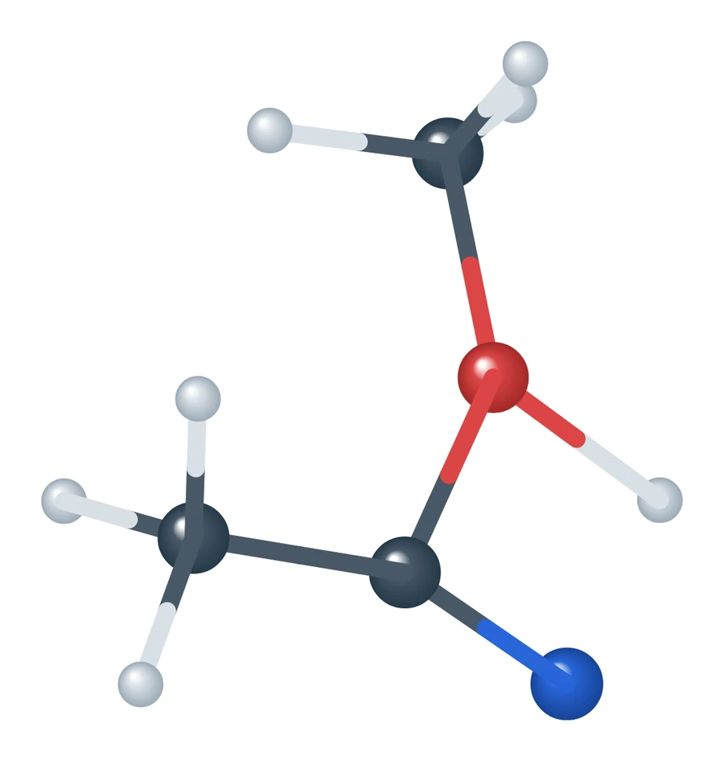
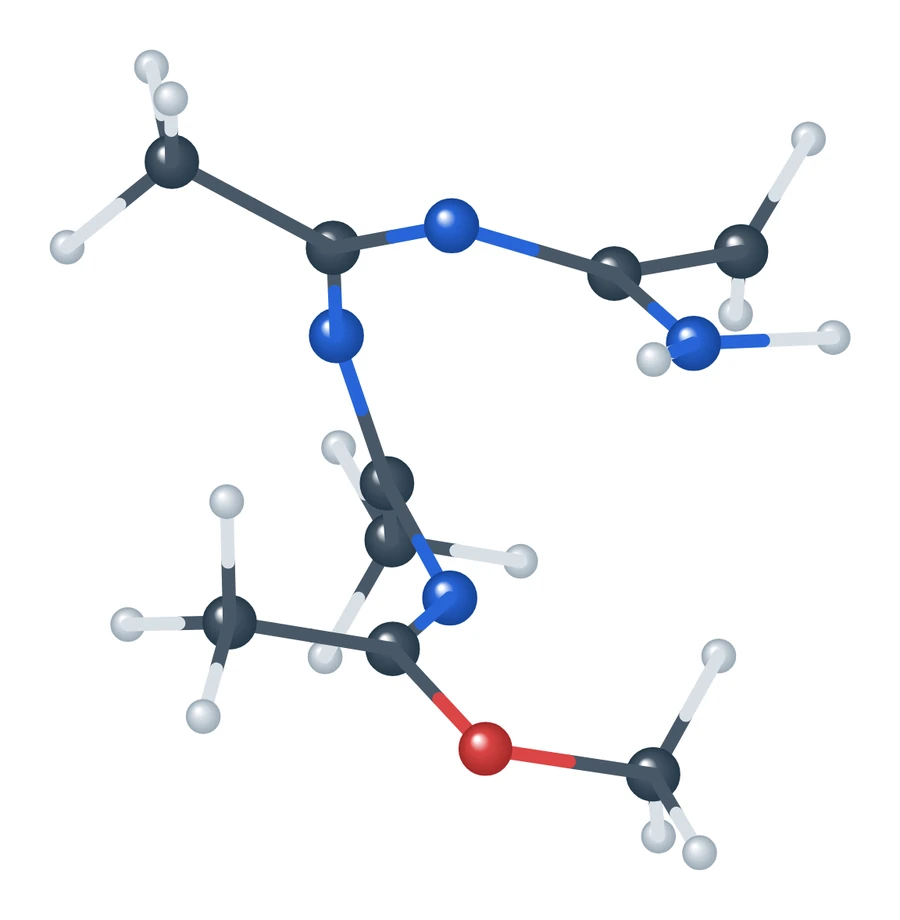

Alcohol reactions
Automated reaction search for acetonitrile in alcohols
In alcohols, acetonitrile can trimerize to 2,4,6-trimethyl-1,3,5-triazine and react further to 4-amino-2,6-dimethylpyrimidine. Unbiased semiempirical dynamics did not reach these products, so we used AutoMeKin to search the reaction network of four acetonitrile and four alcohol molecules and connected the full route step by step for methanol, ethanol and isopropanol.
Click a peak to load its transition state below, or a plateau for the intermediate. Stages are shaded, and the labelled peak is the hardest step.
The route
From imidates to the triazine and the aminopyrimidine
The route begins when the alcohol adds across the C≡N bond to give an alkyl acetimidate. Imidates then condense to an iminoether dimer and an open linear trimer. Ring closure is nearly barrierless at 2–3 kcal/mol, and loss of the alcohol, at 35–36 kcal/mol, gives the triazine.
From the triazine, an imidate adds to the ring, the ring opens, and a hydrogen transfer followed by C–C closure forms the aminopyrimidine while returning acetonitrile and the alcohol. Because the alcohol is regenerated, it acts as a promoter. The hardest step is the hydrogen transfer before C–C closure, at about 61 kcal/mol, and with all molecules separated the reaction of three acetonitrile molecules to the aminopyrimidine releases 40.6 kcal/mol for each of the three alcohols.
Transition states



Methanol route, rendered from the PM7 transition-state geometries.